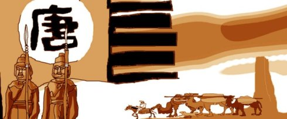

After Zhang Qian visit the western region, the Han dynasty began to move the control of the western region. In 60 BC, the Han dynasty was established as a direct jurisdiction of the western region. Marked by the establishment of officials in the western region of the Han dynasty, the silk road began to enter the era of prosperity.
The Tang dynasty, the Chinese government to borrow to break down the Turkic，and the establishment of four Garrisons as an institution of the Chinese government control of the Tianshan north road of silk road line,bringing the commercial road back to its heyday.
China's new silk road initiative (One Belt And One Road) will benefit the entire Eurasian continent and even the continent.